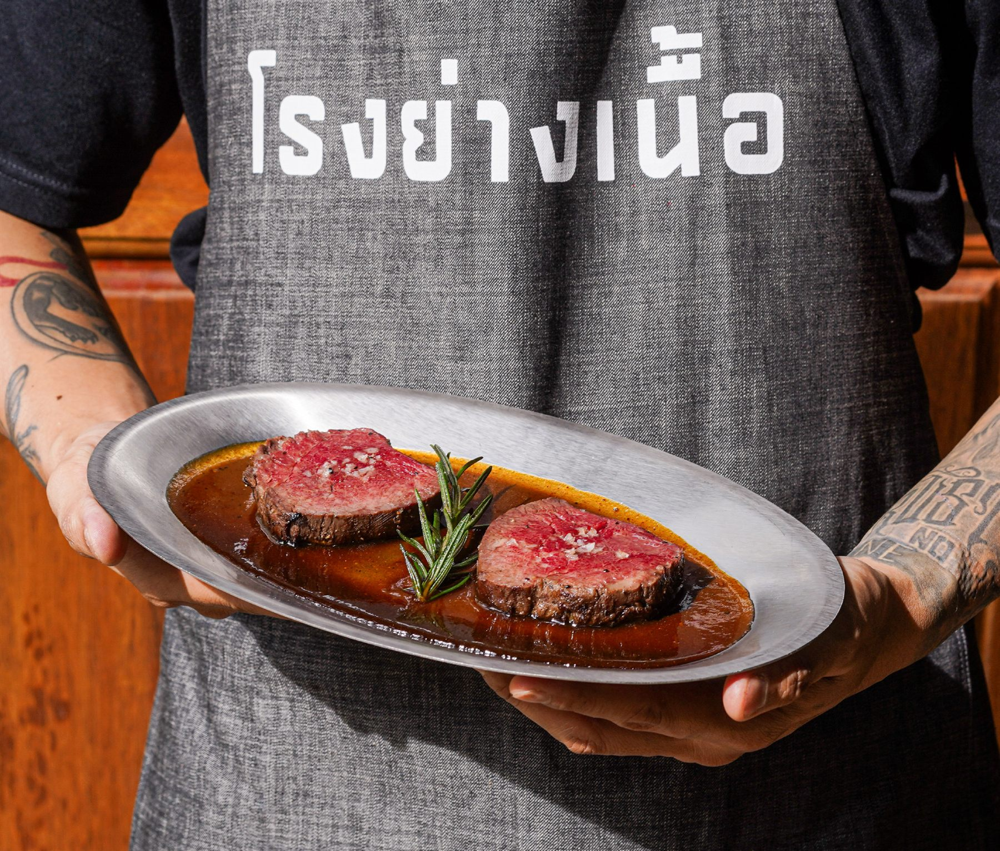
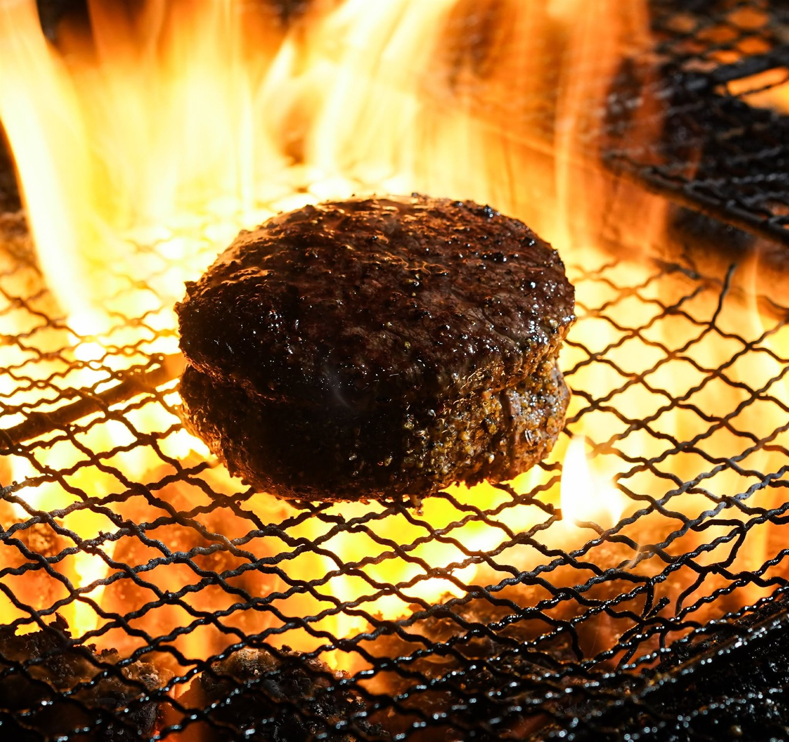
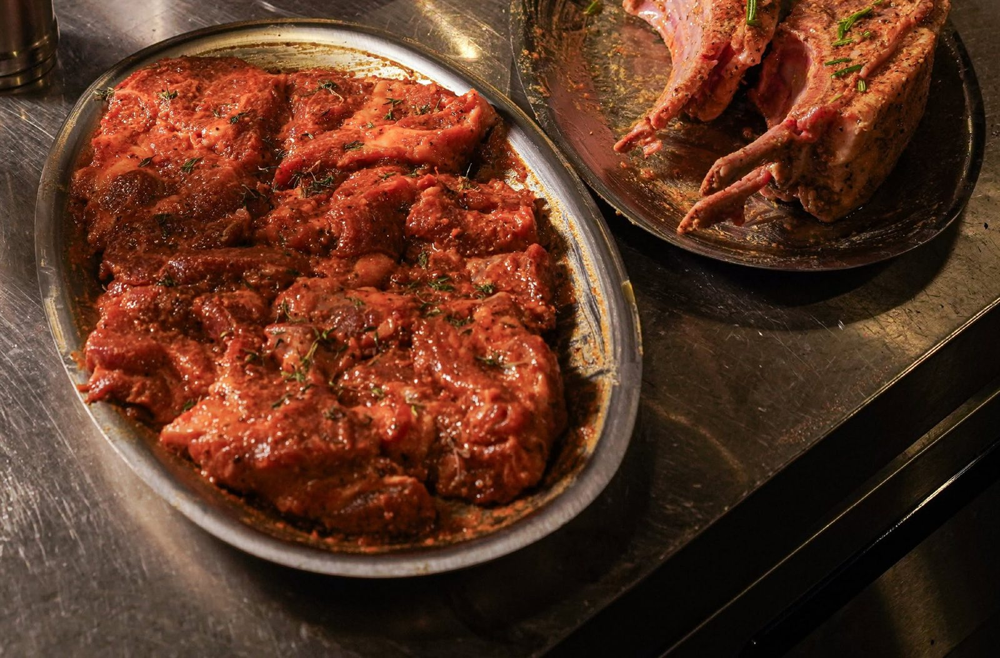
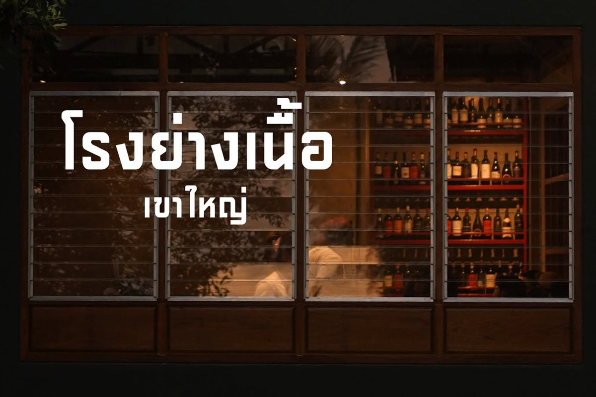

Pork · from the grill
Grilled Pork Ribs
ซี่โครงหมูย่าง
590 ฿

Rabbit Grill — Pak Chong, Khao Yai
A grill house in Khao Yai with an open kitchen you can sit right next to. Charcoal smoke, a loud room, and a prime rib carved to whatever weight your table actually feels like eating.
01 The idea
Rabbit Grill is a place for grilled food, generous plates and unhurried meals in Khao Yai. Not a hushed dining room — a kitchen you can hear, smell and sit beside.
“When the kitchen gets busy, Rabbit Grill comes alive.”
Rabbit Grill, in their own words — Instagram

02 The room
The pass is right there — copper heat lamps, a full room, and whoever is working the grill standing a few steps from your table.



03 The counter
Prime rib here is not sold by the plate. It is sold by the 100 grams — 490 ฿ a cut. Drag across the rib and watch what your table is actually ordering.
Drag to carve
490 ฿ per 100 g is the price on their current menu. The rib in the photograph is theirs.
04 From the grill
Pork. Vegetables. Seafood. Beef. Everything goes over the charcoal.
Pork · from the grill
ซี่โครงหมูย่าง
590 ฿

Seafood · from the grill
กุ้งแม่น้ำย่าง
990 ฿

To start · beef
บีฟทาร์ทาร์เสิร์ฟพร้อมโบนแมโรว์
490 ฿

To start · vegetable
คอร์นริบ
150 ฿
05 The house
The restaurant describes itself as a grill house that selects only good meat and cooks it carefully over fire — run, in their words, by a chef who specialises in beef.
“By a beef specialist — Chef Bas, Top Chef Thailand”
Rabbit Grill’s own announcement, Facebook, 23 April


06 Nong Nam Daeng
Part of the pleasure is getting here. We are at 339 Moo 11, Nong Nam Daeng, Pak Chong — on the same grounds as Rosebay Homecooking Cafe.
Call 099 245 5444 · 11:00–21:00 · Closed Wednesdays
07 Coming with a pet
Ring us before you set out and we will tell you what we can do for you on the day.
We have not published a fixed pet policy, so it is better to ask us than to guess. The phone is fastest.

08 What is on the grill
339 Moo 11, Nong Nam Daeng
Pak Chong, Nakhon Ratchasima
On the same grounds as Rosebay Homecooking Cafe
11:00 – 21:00 · Closed Wednesdays
Wednesday closing is the restaurant’s own notice. The times come from their Google and Wongnai listings.